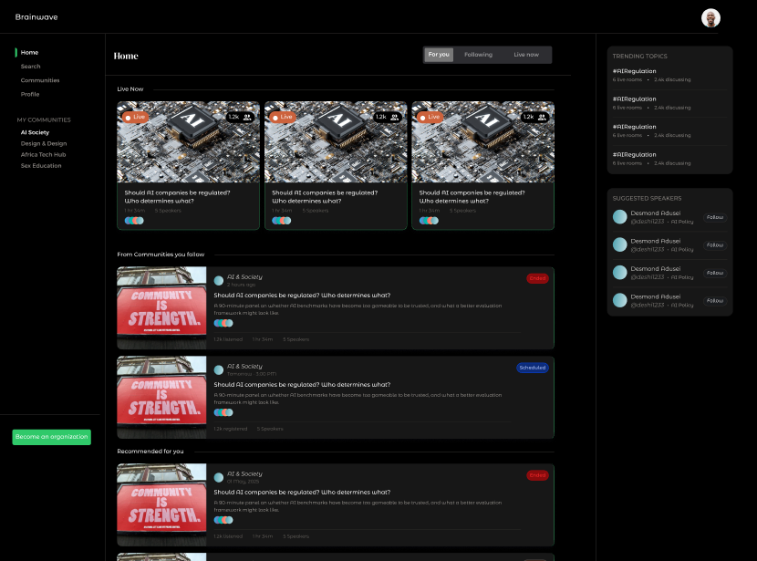
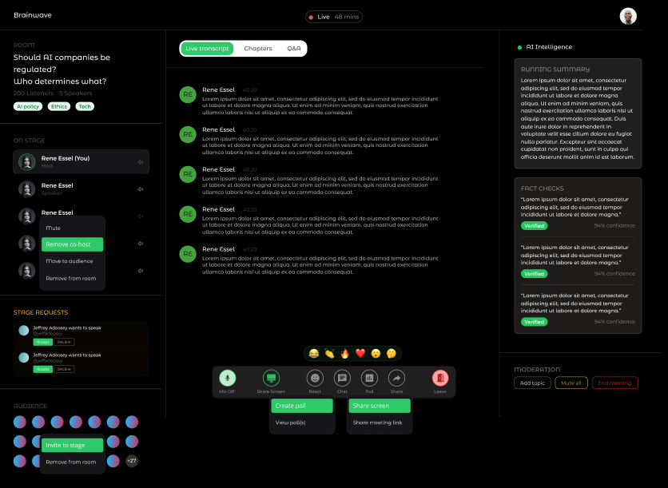
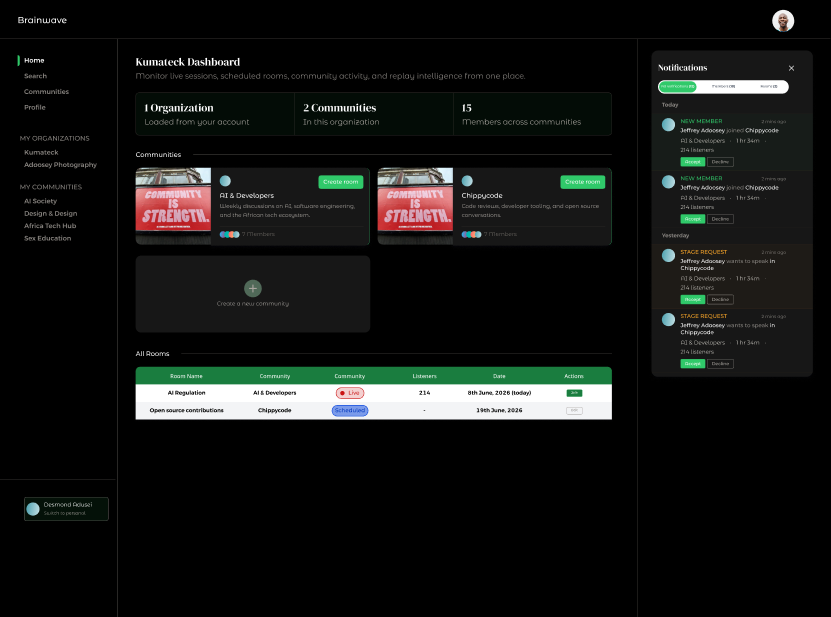

Brainwave
I was the product and UX designer on Brainwave, an AI powered live audio discussion platform, working with a developer on a two person team with no outside funding. The problem I set out to solve was that every live discussion disappears when the room closes, with no transcript and no way to verify what was said. Over two months, I designed the core experience: the home timeline, the live room, and the organization dashboard. The live room needed four distinct permission states, Host, Co-host, Speaker, and Listener, each with its own controls. I also designed the notification system and the full color system. Instead of handing over static screens, I used working Figma prototypes as the handoff so the developer could see how the product behaved. I worked with Claude as a collaborator, describing design problems in conversation and refining what it produced, while I made the judgment calls on hierarchy, permissions, flow logic, and product tone.
Case Study02/05
The best conversations in the world were happening on audio platforms and leaving no trace
01
THE PROBLEM
Every live discussion disappears when the room closes. No transcript. No record. No way to verify what was said.
02
THE CONSTRAINT
Two-person team. No external funding. Timeline running parallel to an MA program and active developer build. Every visual representation of presence had to work without faces or video feeds. Real-time AI processing; transcription, fact-checking and summarization all happening simultaneously during a live session
03
THE APPROACH
Design from analogues and real user behaviour. Build the MVP that proves the core proposition, then iterate on working builds. Using working Figma prototypes instead of static Figma frames as the handoff artifacts for Developer to understand behaviour, not just appearance.
AI INVOLVEMENT
Embracing the future
Claude (Anthropic) was a collaborator throughout this project. Rather than designing screens in Figma and handing them to the developer to interpret, I described design problems and design inspiration in conversation and received working HTML prototypes in the same session. Iterations and improvements were then made in figma for improvements.
The live room role system — four distinct permission states, each with correct controls, designed and prototyped in a single session.
What that unlocked
- The notification panel — eight notification types, priority levels, filter tabs, and inline actions built from a verbal description of the system logic.
- The design system — full 10-stop primary green scale and warm neutral scale, with UX rationale for each stop, generated and refined in conversation.
What that did for me
I spent core design time on decisions that required judgment; hierarchy, permissions, flow logic, product tone, design system etc. Claude helped producing. The result was a design cycle compressed to a fraction of its normal length without cutting the logic.
SELECTED SCREENS01/02

01
Home Timeline
Live rooms surface at the top as a horizontally scrolling strip — urgent, time-sensitive content first. The feed below mixes communities you follow and AI-recommended rooms. The Become an Organization CTA lives at the sidebar bottom for regular users.
02
Live Room
Host, Co-host, Speaker, and Listener each have distinct interfaces and permission sets. The bottom bar controls, AI panel content, and left column all change by role. Every screen was designed as a working HTML prototype with a role switcher. Developer built directly from these rather than static frames.


03
Organisation dashboard
Workspace home for org accounts. Stats strip, community cards with inline Create Room buttons, rooms table with live status, and a notifications panel with four filter tabs and inline Accept/Decline for stage requests and join requests.